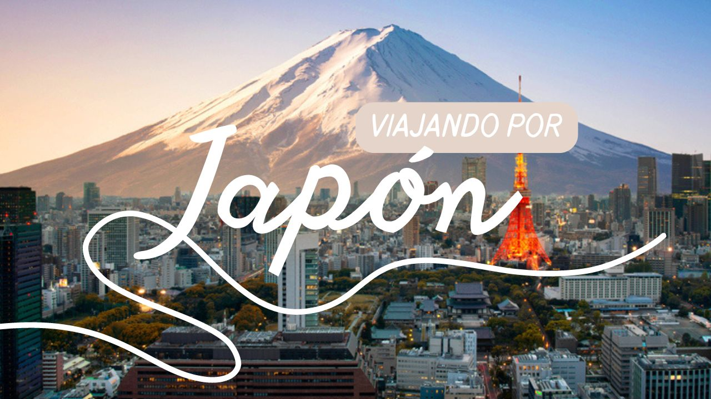

Parques naturales, restaurantes de alta gama y aguas termales se encuentran entre los parajes favoritos de los turistas que visitan los destinos de Japón.
Acerca de Japón
Tokio
Una de las ciudades metropolitanas más diversas y convulsas de toda Asia.
Kioto
Es fácilmente accesible por tren, y se enciende en un fulgor rosa pálido durante los meses de marzo y abril, cuando los cerezos despiertan.
Sapporo
Está abierta todo el año para el turismo internacional, la ciudad realmente florece en invierno.

Yokohama
Está a las orillas del mar, los visitantes pasan el día junto a la playa. Sin embargo, el destino es famoso por el Museo del Ramen y sus parques de diversiones.

Osaka
Es una ciudad dedicada al entretenimiento. La inmensa cantidad de comercios ofrece algo que ver en cada esquina. Además, es considerada la capital culinaria de todo el país.

Aoshima
En una isla remota del sur de Japón. Aoshima es una de las ciudades habitadas por animales más visitadas en el mundo, ya que la atracción turística principal es dar de comer a los gatitos callejeros.